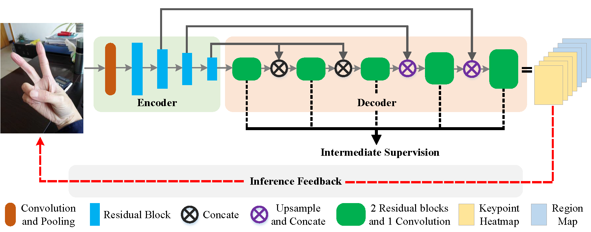
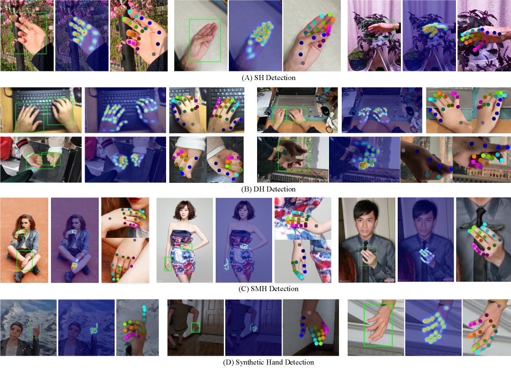
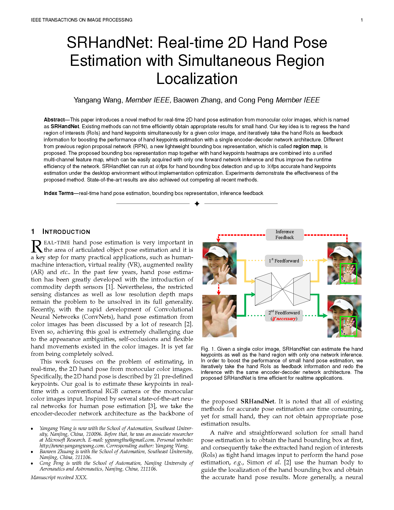

IEEE Transactions on Image Processing (TIP)
SRHandNet: Real-time 2D Hand Pose Estimation with Simultaneous Region Localization

Overview of SRHandNet.
We use an encoder-decoder architecture as the backbone of our network to perform the 2D hand pose estimation. In the training stage, the intermediate supervision is adopted. In the inference stage, we perform the cycle detection according to the size of hand. Abstract
This paper introduces a novel method for real-time 2D hand pose estimation from monocular color images, which is named as
SRHandNet
. Existing methods can not time efficiently obtain appropriate results for small hand. Our key idea is to regress the hand region of interests (RoIs) and hand keypoints simultaneously for a given color image, and iteratively take the hand RoIs as feedback information for boosting the performance of hand keypoints estimation with a single encoder-decoder network architecture. Different from previous region proposal network (RPN), a new lightweight bounding box representation, which is called region map
, is proposed. The proposed bounding box representation map together with hand keypoints heatmaps are combined into a unified multi-channel feature map, which can be easily acquired with only one forward network inference and thus improve the runtime efficiency of the network. SRHandNet can run at 40fps for hand bounding box detection and up to 30fps accurate hand keypoints estimation under the desktop environment without implementation optimization. Experiments demonstrate the effectiveness of the proposed method. State-of-the-art results are also achieved out competing all recent methods.Running Code and Trained Model
Here, we release the demo code (under VS2019, Nvidia 1080Ti with CUDA10.1 and cuDNN7.6, Win10). You can directly run the code with the given model [hand.pts] and deploy it into real desktop applications.
[Note: if you use other Graphic cards, please re-compile the source code]
Demo Example Code (windows version)
We also release the source code for your personal compilation under other platforms. The rights to copy, distribute, and use the code are being given access to are under the control of Yangang Wang, director of the Vision and Cognition Lab, Southeast University. In this case, credit must be given to: *SRHandNet: Real-time 2D Hand Pose Estimation with Simultaneous Region Localization*.Any commercial use is not allowed
. Node that this code relies on the C++ library of Pytorch and OpenCV. You should configure Pytorch and OpenCV correctly beforehand. I am very glad to receive your feedbacks about this code.
It is noted that our network was originally trained by Caffe2. Since Caffe2 has been integrated into Pytorch, we both release the trained models with Pytorch and Caffe2 (We strongly recommend you to use the Pytorch model
) cause Pytorch has a more active community .
Model trained by Pytorch Model trained by Caffe2
We use the training dataset from our public dataset OneHand10K. If you want to retrain the model by your own, you can send me E-mail to request the dataset by the necessary requirements. Moreover, the evaluation dataset in this paper can be downloaded in the following link.Results

Materials
|

Related links
|
|
Reference
Yangang Wang, Baowen Zhang and Cong Peng. "SRHandNet: Real-time 2D Hand Pose Estimation with Simultaneous Region Localization". IEEE Transactions on Image Processing, 29(1):2977 - 2986, 2020.
Acknowledgments: This work was supported by the National Natural Science Foundation of China (No. 61806054, 6170320), Natural Science Foundation of Jiangsu Province (No. BK20180355 and BK20170812) and Foundation of Southeast University (No. 3208008410 and 1108007121).